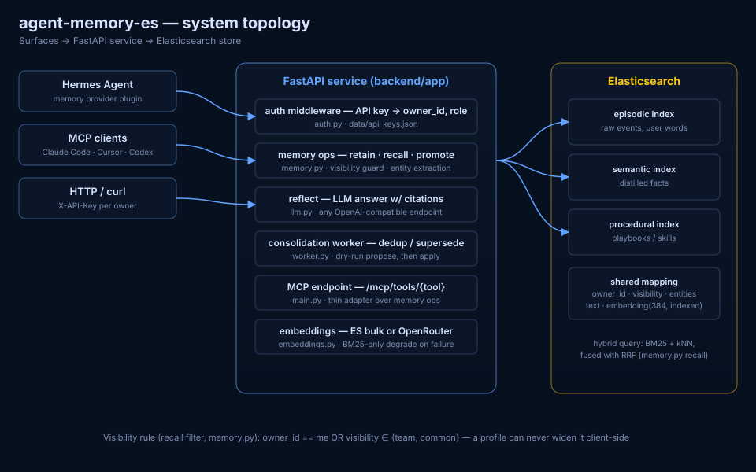

A self-owned, Elasticsearch-native long-term memory service for AI agents. Every agent — and every human teammate — gets a memory bank: raw experience, distilled facts, and procedural playbooks. Hybrid search in, isolated per owner, shared only on explicit promotion.
Every session starts from zero. Context windows are not memory — they're a whiteboard that gets erased.
Team playbooks should be common; your API keys and personal corrections must stay private. Both live in one store, one filter.
Runs on your Elasticsearch. No third-party memory SaaS between your agents and their past.
Episodic raw events, semantic facts, or procedural playbooks — each tagged with owner + visibility.
Hybrid BM25 + dense-vector search, RRF-fused, cut to a token budget. Server-side visibility filter.
An LLM answers questions over recalled evidence — with citations back to memory ids.
A background worker dedups and supersedes stale facts. Propose-then-apply; audit history kept.
Recall filter: owner_id == me. Identity comes from the API key — never a request argument.
Explicit promotion only; a deterministic guard blocks promoting texts with sensitive markers.
Playbooks and fleet-wide knowledge. Rejection tombstones stop forgotten values being re-learned.
Full pipeline: recall-pipeline.svg · topology: architecture.svg
Standalone memory-provider plugin — three agent tools: agent_memory_recall, agent_memory_retain, agent_memory_reflect.
Claude Code, Cursor, Codex — anything speaking MCP hits the same memory ops over /mcp/tools/*.
curl with an X-API-Key. Five operations: retain, recall, promote, consolidate, reflect.
